Containerization with Azure
Introduction to Containerization
Containers
A container is a readymade software environment that has the application code and its dependency’s preloaded within an image.
Whilst machine virtualisation operates at the hardware level and provides a way to run multiple instances of an operating system, containers on the other hand share the host operating system and run using isolated processes.
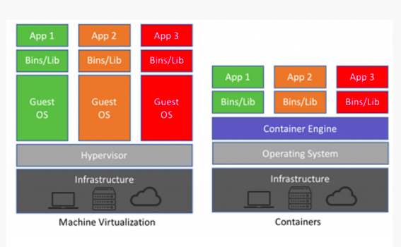
The container engine allows each application (container) to run on top of the host operating system but remain isolated from each other.
Container Image
A container image is a self-contained piece of software that has everything in it needed to run – code, tools, and resources.
Azure Container Registry
Azure Container Registry provides storage of private Docker container images, enabling fast, scalable retrieval, and network-close deployment of container workloads on Azure.
Features
- Securely stores your Docker Images
- Easy to setup & provision in Azure Cloud
- Supports High availability
- Cost is really inexpensive compared to other options available in the market to store Docker Images
Microsoft currently offers three versions of ACR: Basic, Standard, and Premium, at three different price points.
Basic has the lowest capacity; Premium includes support for replication across regions and adds image signing support. You’re most likely to use Standard, which gives you 100GB of storage, 60MBps download bandwidth, and supports as many as 10 Web hooks. Pricing is per registry per day, with additional network costs and a separate charge for CPU usage when building new container images.
Creating a new container registry is relatively easy, using either the Azure CLI or Portal. ACR instances are tied to resource groups, so you can have a separate registry for each application you run on Azure. Once a registry has been created, you’re given the URL of a log-in server. This is the end point for integration with devops tools or your developers’ desktop Docker instances.
Demo On Azure container registry.
- Create an angular application
- Prepare Dockerfile for it.
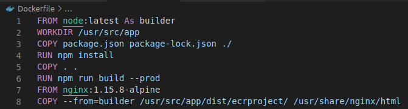
-
Build docker image from this dockerfile using command :
docker build -t acrrepo/image1.0 .
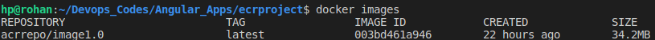
-
Install azure Cli using following steps :
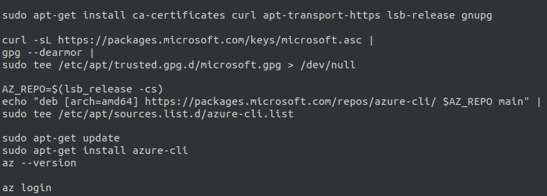
-
Create a resource group :
az group create --name acrdemo --location eastus2
-
Create an acr :
az acr create --resource-group acrdemo --name rohan2567acr --sku Basic --admin-enabled true
-
Now, Login to Azure Container Registry :
az acr login --name rohan2567acr
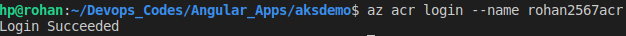
-
To be able to push Docker images to Azure Container Registry, they need to be tagged with the loginServer name of the Registry. These tags are used for routing purposes when we push these Docker images to Azure.
To figure out the loginServer name of the Azure Container Registry we just created you can use the following command:
az acr list --resource-group acrdemo --query "[].{acrLoginServer:loginServer}" --output table
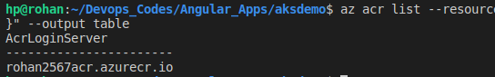
-
Now, tag the previous created image to makeit ready to push it in acr.
docker tag acrrepo/image1.0 rohan2567acr.azurecr.io/image1.0
-
Now, push into acr.
docker push rohan2567acr.azurecr.io/image1.0
-
Verify :
az acr repository list -n rohan2567acr
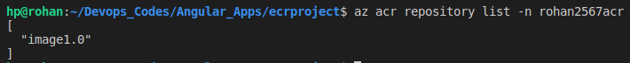
Azure Kubernetes Service
AKS is an open-source fully managed container orchestration service that can be used to deploy, scale and manage Docker containers and container-based applications in a cluster environment.
Azure Kubernetes Service offers provisioning, scaling, and upgrades of resources as per requirement or demand without any downtime in the Kubernetes cluster and the best thing about AKS is that you don’t require deep knowledge and expertise in container orchestration to manage AKS.
AKS is a free container service where nothing will be charged for Kubernetes cluster management. You’ll have to pay only for the cloud resources such as VMs, storage, and network resources you consume makes it the most cost-effective container orchestration service in the market.
Demo on AKS
-
There are a number of configuration options that can be submitted when creating an AKS cluster. One such setting is the version of Kubernetes to run on the cluster. Depending on your needs, you may choose to run an older or newer version of Kubernetes.
So, firstly choose the required version.
az aks get-versions --location eastus2 -o table
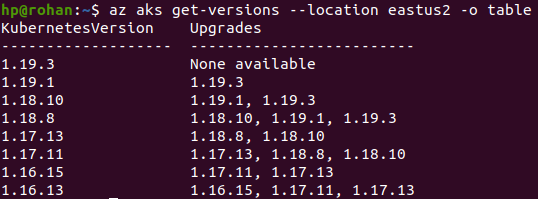
-
Create an aks cluster
az aks create --resource-group acrdemo --name rohan2567aks --kubernetes-version 1.19.1 --location eastus2 --node-count 2 --generate-ssh-keys
-
Once the AKS cluster is built, the next step is to retrieve the credentials that will be used with kubectl. Kubectl is the command-line program that manages the cluster.
To download the credentials, query the AKS cluster by using the az aks get-credentials command specifying the resource group and name of the cluster
az aks get-credentials --resource-group acrdemo --name rohan2567aks
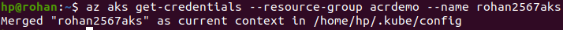
-
Now attach the ACR to AKS cluster.
az aks update -n rohan2567aks -g acrdemo --attach-acr rohan2567acr
-
Now Install the kubectl command.
sudo apt-get update && sudo apt-get install -y apt-transport-https gnupg2 curl
curl -s https://packages.cloud.google.com/apt/doc/apt-key.gpg | sudo apt-key add -
echo "deb https://apt.kubernetes.io/ kubernetes-xenial main" | sudo tee -a /etc/apt/sources.list.d/kubernetes.list
sudo apt-get update
sudo apt-get install -y kubectl
kubectl version --client
-
Now export the kubeconfig variable.
export KUBECONFIG=/home/hp/.kube/config
-
Verify the creation of nodes.
kubectl get nodes
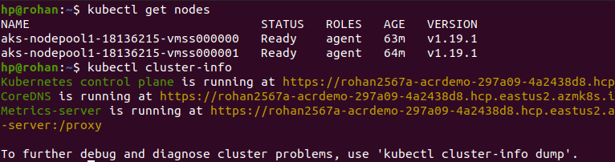
-
Now, get the acr login name as it would be used in the kubernetes manifest file.
az acr list --resource-group acrdemo --query "[].{acrLoginServer:loginServer}" --output table
-
Now, create the deployment file.
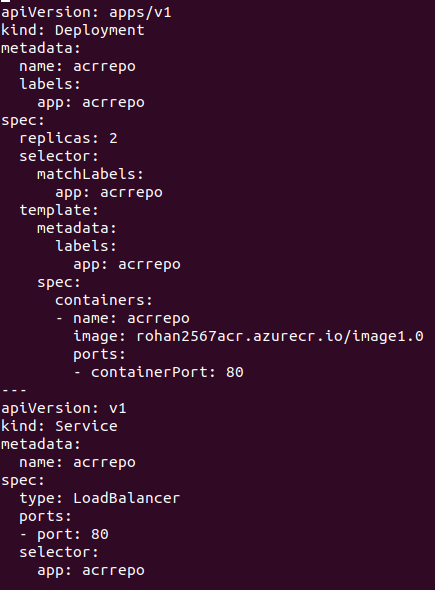
-
Execute the below command to get pods and deployment running.
kubectl create -f acr-deployment.yaml
Now, check nodes, services and by using external IP , you can access your application.
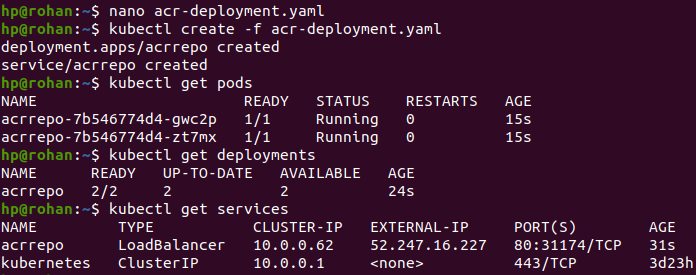
Open your browser using external IP and the port.
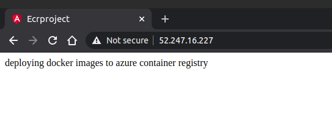
![]()